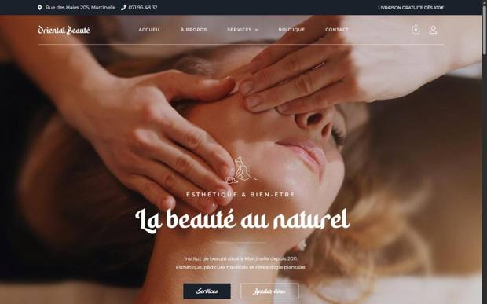

Indépendant · E-commerce
Oriental Beauté (nouvel onglet)
Boutique en ligne pour un institut de beauté : forfaits de soins, réservation et paiement sécurisé. Le parcours va de la découverte d'un soin à la confirmation, en un minimum d'étapes.
Signé dans le pied de page
- WordPress
- WooCommerce
- Elementor
- UI/UX